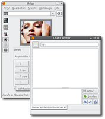

Ekiga
Dieser Artikel wurde für die folgenden Ubuntu-Versionen getestet:
Ubuntu 16.04 Xenial Xerus
Ubuntu 14.04 Trusty Tahr
Zum Verständnis dieses Artikels sind folgende Seiten hilfreich:
Ekiga - der Nachfolger des Programmes GNOME-Meeting - ist eine vollständige VoIP-Lösung. Mit Hilfe der Software können Telefonate, Videotelefonate und Chats geführt werden. Benötigt wird ein Headset und, wenn man Videotelefonie betreiben möchte, eine Webcam. Ekiga unterstützt derzeit noch kein IPv6. 
VoIP ist die Abkürzung für Voice over IP, sprich die Telefonie über ein Computernetzwerk. Dabei werden die analogen Audiosignale eines Telefons in digitale Datenpakete umgewandelt und über ein Netzwerk verschickt. Die Übertragung kann entweder über das Internet oder aber über das Heim- bzw. Firmennetzwerk erfolgen.
VoIP verwendet, wie der Name schon sagt, das Übertragungsprotokoll IP, um die Daten in einem Netzwerk verschicken zu können. Die Telefondaten unterscheiden sich also nicht von anderen Daten im Internet.
Ist eines der beiden Endgeräte nicht über das Internet, sondern nur über das herkömmliche Telefonnetz erreichbar, muss ein sogenannter „Gateway“ die Umwandlung von IP-Paketen in ein analoges Signal und umgekehrt übernehmen. Dieses Gateway funktioniert meist über das Session Initiation Protocol kurz SIP. Es gibt mittlerweile viele Anbieter, die zum einen Programme oder Hardware für VOIP über SIP herstellen, bzw. Dienstleister, die einen Zugang zu den Telefonnetzen per SIP bereitstellen.
Installation¶
ekiga
 mit apturl
mit apturl
Paketliste zum Kopieren:
sudo apt-get install ekiga
sudo aptitude install ekiga
Konten¶
Sehr unkompliziert ist ekiga.net  vom Hersteller von Ekiga. Dieser Anbieter kann automatisch mittels des Konfigurationsassistenten innerhalb von Ekiga als Konto angelegt werden. Man erhält zwar keine Festnetzrufnummer, kann jedoch gleich mit der VoIP-Telefonie - innerhalb des ekiga.net-Netzes - anfangen. Weitere SIP-Provider zusammen mit den notwendigen Einstellungen findet man im Internet-Telefonie-Artikel hier im Wiki.
vom Hersteller von Ekiga. Dieser Anbieter kann automatisch mittels des Konfigurationsassistenten innerhalb von Ekiga als Konto angelegt werden. Man erhält zwar keine Festnetzrufnummer, kann jedoch gleich mit der VoIP-Telefonie - innerhalb des ekiga.net-Netzes - anfangen. Weitere SIP-Provider zusammen mit den notwendigen Einstellungen findet man im Internet-Telefonie-Artikel hier im Wiki.
Einstellungen¶
Unter "Bearbeiten -> Einstellungen" lassen sich noch weitere Details einrichten. Viele dieser Optionen sind nur dazu da, Ekiga an die eigenen Bedürfnisse anzupassen oder die Einstellungen zu ändern. Wichtig sind jedoch noch die Optionen, die man unter "Protokolle" findet.
Rechte¶
Damit man telefonieren kann, muss der Benutzer noch der Gruppe "voice" hinzugefügt werden, damit er die entsprechenden Rechte besitzt[2], das geht z.B. mit folgenden Befehl:
sudo adduser `whoami` voice
Firewall/Router¶
Befindet man sich hinter einer Firewall oder einem Router, so muss Ekiga eventuell noch gesagt werden, einen STUN-Server zu nutzen. Dieser STUN-Server ermöglicht den unkomplizierten Einsatz von Computer-Programmen in Heimnetzwerken, die Daten aus dem Internet empfangen möchten. Dadurch brauchen keine Ports durch Firewalls geleitet oder sonstige Einstellungen geändert zu werden. Die entsprechenden STUN-Server findet man in der Anbieter-Tabelle.
Hinweis:
Bei Ekiga in den Version 3.2 und 4.0 ist die STUN-Server-Einstellung leider nicht mehr sichtbar, kann jedoch von der Kommandozeile aus durchgeführt werden. Beispiel (der STUN-Servername muss ggf. angepasst werden):
#! gconftool-2 -s /apps/ekiga/general/nat/stun_server stun.sipgate.net:10000 --type=string
Test¶
Um zu testen, ob Ekiga funktioniert, kann man die Nummer sip:500@ekiga.net anwählen. Dadurch kommt man in ein Test-System, welches alles, was man zum Server sagt, mit ein paar Sekunden Unterschied zu einem zurücksendet. Der Test funktioniert nur, wenn man als Audio-Codec "PCMU" in den Einstellungen aktiviert hat.
Konferenzräume¶
Der Provider Ekiga bietet auch Konferenzräume an. Über sip:501@ekiga.net kommt man in den offiziellen Konferenzraum von Ekiga. Möchte man einen eigenen Konferenzraum eröffnen, wählt man sip:501XXXX@ekiga.net, wobei XXXX eine beliebige vierstellige Nummer für seinen Raum ist. Dann wird man nach einem Passwort gefragt, wenn man den eigenen Konferenzraum per Passwort schützen möchte. Das Passwort gibt man ein, indem man die Zahlenkombination wählt. Drückt man direkt #, wird der Konferenzraum ohne Passwort eröffnet.
Andere VOIP-Netze erreichen¶
Der Provider Ekiga bietet auch Durchwahlnummern für andere VOIP-Netze an, wenn man mit jemandem "chatten" möchte, der kein Ekiga benutzt. Dazu muss man eine Vorwahl vor die eigene Nummer setzen:
| Vorwahl | VOIP-Netz |
*747 | Gizmo/SIPPhone |
*393 | Freeworlddialup |
*534 | Voipbuster |
*551 | internetcalls |
*248 | Wengo |
Internes Telefon an einer Fritz!Box FON¶
Ekiga lässt sich als VoIP-Client ("IP-Telefon") in einem LAN an einer Fritz!Box betreiben. Dafür ist es erforderlich zuerst ein entsprechendes Telefoniegerät im System der Fritz!Box einzurichten (z.B. Fritz!Box 7490: Telefonie -> Telefoniegeräte -> Neues Gerät einrichten -> "Telefon" wählen -> weiter -> "IP-Telefon" wählen -> …).
Richtet man Ekiga zum ersten Mal ein, kann man alle Fragen des Konfigurations-Assistenten nach einem Ekiga-Konto durch Setzen des entsprechenden Häkchens überspringen. Nachdem das Hauptfenster erscheint, legt man unter "Bearbeiten -> Konten" ein neues SIP Konto mit folgenden Einstellungen an:
| Konto-Bezeichnung | Fritz!Box |
| Registrar | fritz.box |
| Benutzer | <die Nummer, die in der Fritz!Box für dieses IP-Telefon angezeigt wird, zum Beispiel 620> |
| Authentifizierungs-Name | <die selbe Nummer wie unter 'Benutzer'> |
| Passwort | <das Kennwort, welches man bei der Einrichtung dieses IP-Telefons in der Fritz!Box gewählt hat> |
| Zeitlimit für Anmeldung | 3600 |
Manchmal muss man auch mit alternativen Einstellungen herumprobieren, bis die Anmeldung an der FRITZ!Box klappt.
Bei neueren FritzBox Modellen muss in den Feldern Benutzer und Authentifizierungs-Name nicht die interne Nummer, sondern der Benutzername angegeben werden, welcher bei der Einrichtung an der FritzBox angelegt wurde. Generell gilt, dass man in beiden Feldern entweder die interne Nummer oder den vergebenen Benutzernamen eintragen muss. Dies Variiert je nach Firmware-Version. Sollte es zu Verbindungsproblemen kommen, sollte man zunächst beide Möglichkeiten ausprobieren.
Eine Merkwürdigkeit gibt es zumindest mit Fritz!Box FRITZ!Box Fon WLAN 7320, Firmware-Version 100.04.89 und vielleicht anderen. Diese Fritz!Box verwendet offiziell als Registrar-Namen fritz.box, aber hängt für eingehende Anrufe ein fritz.fonwlan.box an die Anrufer-Nummer. Dadurch sind Rückrufe aus Ekiga durch einfaches Klicken auf die Nummer in der Ekiga-Anrufliste nicht möglich. Das Problem kann man dadurch umgehen, dass man ein weiteres Konto in Ekiga einträgt und aktiviert:
| Konto-Bezeichnung | Fritz!Box 2 |
| Registrar | fritz.fonwlan.box |
| Benutzer | <wie beim Fritz!Box Konto> |
| Authentifizierungs-Name | <wie beim Fritz!Box Konto> |
| Passwort | <wie beim Fritz!Box Konto> |
| Zeitlimit für Anmeldung | <wie beim Fritz!Box Konto> |
Zum Testen kann man nun zum Beispiel sip:**9 in Ekiga (Rundruf an alle) oder sip:**600 (Anrufbeantworter 1 in der Fritz!Box) wählen.
Damit Ekiga bei jedem Einloggen startet, sollte man das Programm noch in den Startup-Manager des Desktops eintragen.
Telefonnummer wählen¶
Telefonnummern werden im Format sip:+XXX@fritz.box angegeben. Um eine Telefonnummer in München anzurufen könnte daher folgendes eingegeben werden: sip:+498912345678@fritz.box
Konsole¶
Man kann einen Anruf auch über die Konsole tätigen:
ekiga -c sip:01234567@sip.provider.com
So sollte sich dann auch eine automatische Wahlwiederholung über einen Cron-Job und ein Skript realisieren lassen.
Problembehebung¶
Mehrere Ekiga-Clienten hinter einem Router¶
Arbeitet man mit mehreren Ekiga-Clients bzw. SIP-Anwendungen hinter einem Router, so kann es zu Problemen mit der gleichzeitigen Anmeldung von mehreren Clients kommen. Eventuell kann man sich hier mit der Einrichtung eines SIP-Proxy Dienstes wie siproxd helfen.
Probleme bei NAT-Routern¶
Früher erkannte Ekiga den NAT-Router beim Einrichten eines Kontos und bot einem automatisch an, einen Stun-Server zu verwenden, der das Problem behebt. Seit etwa Version 3.0 und auch in Version 4.0 bietet Ekiga keine direkte Einstellungsmöglichkeit des Stun-Servers mehr, sondern wählt automatisch stun.ekiga.net als Stun-Server aus. Wie man den Stun-Server ändert, ist weiter oben in diesem Artikel beschrieben.
Falls eine Empfehlung zum Port-Forwarding kommt - muss ggf. die weiterzuleitende Port-Bereich ("range"") mit 5000-5100, wie auf dieser Seite beschrieben, angegeben werden. Der Port 5060 ist auch wichtig und muss entsprechend angegeben werden.
Probleme mit iptables¶
Auf dieser Seite im Ekiga-Wiki gibt es u.a. ein Skript, das die Regeln der IPtables anpasst, ohne aber irgendwelche Ports zu öffnen. Eventuell müssen die in Zeile 9 und 10 des Skripts genannten Dateien erst mit sudo erstellt werden, ehe es durchlaufen kann.
Soundqualität¶
Gibt es Probleme bei der Tonqualität, kann es helfen, den Haken bei "Bearbeiten -> Einstellungen -> Video-Codecs -> Video-Unterstützung aktivieren" herauszunehmen. Außerdem kann man unter "Bearbeiten -> Einstellungen -> Audio-Codecs" alle Codecs bis auf einen deaktivieren. Dieser Codec sollte dann der gleiche sein, den auch der Chat-Partner benutzt, und man sollte durchprobieren, welcher Codec am besten funktioniert.
Konfigurations-Druide¶
Audio Manager: Falls man seine Eigene Stimme hört aber keine zeitverzögerte Aufnahme hören kann, parallel dazu in Konsole <alsamixer> starten. Mit der Tabulatortaste die View auf Capture stellen. Mit rechter/linker Pfeiltaste zu Regler Capture gehen. Mit Leertaste Capture aktivieren (roter Text <CAPTUR> erscheint). Für den ersten Versuch mit Pfeiltasten oben/unten alle Regler auf maximum stellen. Ins Mikrofon sprechen und mit Reglern spielen bis man seine Stimme optimal und zeitverzögert durch Ekiga/Konfigurations-Druide/ Audio Manager hören kann.
Datenschutz & Verschlüsselung¶
Zumindest bis einschließlich der Version 3.2 bringt Ekiga noch keine Verschlüsselung der Audio- und Videodaten mit sich, obwohl diese über das Internet übertragen werden. Bis zur internen Fähigkeit die Kommunikationsinhalte zu schützen, ist es daher empfehlenswert, auf eine allgemeine VoIP-Verschlüsselungssoftware zurückzugreifen, um einen grundlegenden Datenschutz über Ekiga zu gewährleisten.
Links¶
ekiga.org
- offizielle Homepage Spezial Nummern
- Eine Liste mit speziellen Rufnummern für Ekiga
- Erstellt mit Inyoka
-
 2004 – 2017 ubuntuusers.de • Einige Rechte vorbehalten
2004 – 2017 ubuntuusers.de • Einige Rechte vorbehalten
Lizenz • Kontakt • Datenschutz • Impressum • Serverstatus -
Serverhousing gespendet von